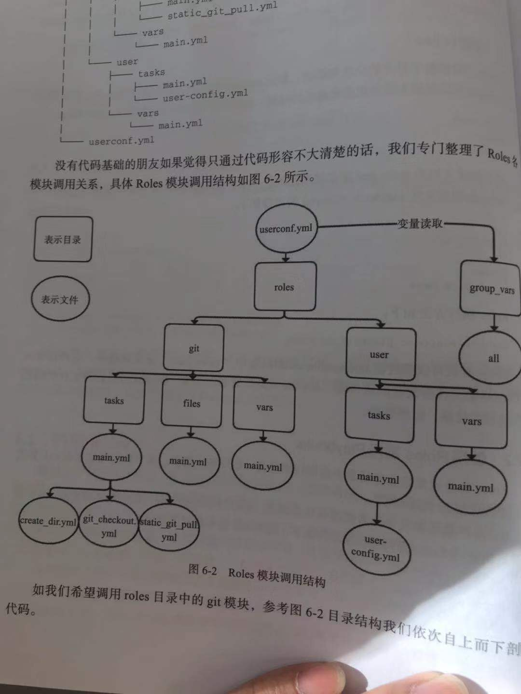

Contents
- Ansible入门与playbook实战
- 关于Ansible
- Ansible SSH工作机制
- 安装Ansible
- 使用expet来批量分发ssh-key
- Ansible与正则
- 通过Ad-Hoc研究Ansible的并发特性
- Ansible常用的核心模块
- 列出webserver组的主机
- 远程命令模块
- command模块
- copy模块
- stat模块
- get_url模块
- yum模块
- cron模块
- mount模块
- service模块
- sysctl包管理模块
- user模块
- group模块
- file模块
- setup模块
- ansible配合YAML使用
- 示例：安装tomcat软件
- playbooks Includes使用技巧
- Roles介绍
- Roles中Files和Templates的区别
- Jinja2模板可以实现高度自定义
- 创建roles时的注意事项：
- Playbook实战1：Ansible部署Tomcat企业实战
- Ansible管理windows实践
- Ansible 批量管理Windows Server服务器
18.6. Ansible入门与playbook实战¶
- 参考文献
18.6.1. 关于Ansible¶
Ansible是⼀种批量、⾃动部署⼯具，不仅可以批量，还可以⾃动。
它主要基于ssh进⾏通信，不要求客户端(被控制端)安装ansible
Ansible是新出现的自动化运维工具，基于Python开发，
集合了众多运维工具（puppet、cfengine、chef、func、fabric）的优点。
实现了批量系统配置、批量程序部署、批量运行命令等功能。
Ansible是基于模块工作的，本身没有批量部署的能力。
真正具有批量部署的是Ansible所运行的模块，Ansible只是提供一种框架。
18.6.2. Ansible SSH工作机制¶
Ansible执行命令时，通过其底层传输连接模块，将一个或数个文件，或者定义一个Play或Command命令传输到远程服务器/tmp目录的临时文件，并在远程执行这些Play/Comand命令，然后删除这些临时文件，同时回传整体命令执行结果。这一系列操作在未来的Ansible版本中会越来越简单、直接，同时快速、稳定、安全。
通过了解其工作机制及其一直以来秉承的去中心化思想，我们可以总结，Ansible是非C/S架构，自身没有Client端，其主要特点如下。
❑无客户端，只需安装SSH、Python即可，其中Python建议版本为2.6.6以上。
❑基于OpenSSH通信，底层基于SSH协议（Windows基于PowerShell）。
❑支持密码和SSH认证，因可通过系统账户密码认证或公私钥认证，所以整个过程简单、方便、安全。建议使用公私钥方式认证，因为密码认证方式的密码需明文写配置文件，虽然配置文件可加密，但会增加Ansible使用的复杂度。
❑支持Windows，但仅支持客户端，服务端必须是Linux系统。
❑Clear（简易）:YAML语法，Python语言编写，易于管理，API简单明了；❑Fast（敏捷）：快速学习，设置简单，无需任何第三方软件；
❑Complete（全面）：配置管理、应用部署、任务编排等功能集于一身，丰富的内置模块满足日常功能所需；
❑Efficient（高效）：没有额外软件包消耗系统性能；
❑Secure（安全）：没有客户端，底层基于OpenSSH，保证通信的安全可靠性。
18.6.3. 安装Ansible¶
PIP方式¶
Ansible底层也是基于Python编写，所以可以通过PIP方式安装Ansible。
步骤1：安装python-pip及python-devel程序包。
# 安装python-pip程序包及python-devel
yum -y install python-pip python-devel
步骤2：安装Ansible服务。
PIP改为国内镜像源下载
清华：https://pypi.tuna.tsinghua.edu.cn/simple/
阿里云：http://mirrors.aliyun.com/pypi/simple/
中国科技大学 https://pypi.mirrors.ustc.edu.cn/simple/
华中理工大学：http://pypi.hustunique.com/
山东理工大学：http://pypi.sdutlinux.org/
豆瓣：http://pypi.douban.com/simple/
# 安装前确保服务器的gcc、glibc开发环境均已安装，系统几乎所有的软件包编译环境均基于gcc。
yum -y install gcc glibc-devel zlib-devel rpm-build openssl-devel
# 升级PIP至最新版本
pip install --upgrade pip
#PIP改为国内镜像源下载ansible
pip install ansible -i http://mirrors.aliyun.com/pypi/simple/ --trusted-host mirrors.aliyun.com
如果想配置成默认的源，方法如下：
需要创建或修改配置文件（一般都是创建），
linux的文件在~/.pip/pip.conf，
windows在%HOMEPATH%\pip\pip.ini
修改内容为：
[global]
index-url = http://pypi.douban.com/simple
[install]
trusted-host=pypi.douban.com
这样在使用pip来安装时，会默认调用该镜像。
如下其他验证安装是否成功的方式也一样，均可执行ansible–version验证。
源码安装方式¶
yum install git –y && git clone git:// github.com/ansible/ansible.git –recursive
// 切换至程序包目录
cd ./ansible
// 执行env-setup脚本，安装Ansible软件包
source ./hacking/env-setup
YUM方式¶
安装⽅法有多种，可以下载源码后编译安装，可以从git上获取资源安装，也可以rpm包安装。rpm安装需要配置
epel源。
经测试，CentOS 6上安装ansible 2.3版本有可能会⾮常慢，需要将ansible执⾏的结果使⽤重定向或者-t选项保存
到⽂件中，下次执⾏才会快。
cat <<eof>>/etc/yum.repos.d/my.repo
[epel]
name=epel
baseurl=http://mirrors.aliyun.com/epel/7Server/x86_64/
enable=1
gpgcheck=0
eof
或者
修改yum源:
wget -O CentOS-Base.repo http://mirrors.aliyun.com/repo/Centos-7.repo
wget -O /etc/yum.repos.d/epel.repo http://mirrors.aliyun.com/repo/epel-7.repo
登陆并修改/etc/ssh/sshd_config
PasswordAuthentication no改为PasswordAuthentication yes并保存
yum list ansible
yum install ansible -y
[root@hujianli-linux ansible]# pwd
/etc/ansible
[root@hujianli-linux ansible]# ll
-rw-r--r--. 1 root root 20269 10月 9 09:34 ansible.cfg
-rw-r--r--. 1 root root 1016 10月 9 09:34 hosts
drwxr-xr-x. 2 root root 6 10月 9 09:34 roles
配置被管理的主机
Ansible通过读取默认主机清单 /etc/ansible/hosts文件，修改主机与组配置后，可同时连接到多个被管理主机上
执行任务，比如定义一个websrvs组，包含3台主机的IP地址。
# 先备份Ansible的host文件
cp -r /etc/ansible/hosts{,._bak}
cat >/etc/ansible/hosts <<-EOF
## green.example.com
## blue.example.com
## 192.168.100.1
## 192.168.100.10
172.16.72.28
172.16.72.29
172.16.72.4
# Ex 2: A collection of hosts belonging to the 'webservers' group
## [webservers]
## alpha.example.org
## beta.example.org
## 192.168.1.100
## 192.168.1.110
[webservers]
172.16.72.28
172.16.72.29
172.16.72.4
EOF
分发密钥设置免密登录
#生成SSH秘钥的连接
在主控端主机（SN2013-08-020）创建密钥，执行：ssh-keygen-t
rsa，有询问直接按回车键即可，将在/root/.ssh/下生成一对密钥，其中
id_rsa为私钥，id_rsa.pub为公钥（需要下发到被控主机用户.ssh目录，同时要求重命名成authorized_keys文件）
# ssh-keygen -t rsa
[root@hujianli-linux ansible]# ansible-doc -s yum
#列出yum模块的描述信息和操作动作
18.6.4. 使用expet来批量分发ssh-key¶
# 安装expect、vim
yum -y install expect vim wget
auto_sshcopyid.exp
# expect脚本
# cat auto_sshcopyid.exp
#!/usr/bin/expect
set timeout 10
set user_hostname [lindex $argv 0]
set password [lindex $argv 1]
spawn ssh-copy-id $user_hostname
expect {
"(yes/no)?"
{
send "yes\n"
expect "*password: " { send "$password\n" }
}
"*password: " { send "$password\n" }
}
expect eof
sshkey.sh
#!/usr/bin/env bash
#usage:xxx
#scripts_name:xxx.sh
# author：xiaojian
PWD=$(pwd)
#ip=`echo -n "$(seq -s "," 3 30)" | xargs -d "," -i echo 172.16.72.{}`
declare -A projects=(
[aget1]="172.16.72.28"
[aget2]="172.16.72.29"
[aget3]="172.16.72.4")
password="admin#123"
#user_host=`awk '{print $3}' /root/.ssh/id_rsa.pub`
for project in ${!projects[@]};do
client="${projects[${project}]}"
# echo $client
${PWD}/auto_sshcopyid.exp root@$client $password &>>/tmp/a.log
if [ "$?" -eq 0 ]; then
ssh root@$client "echo $client ssh Remote communication is ok! "
fi
done
或者使用python脚本
#!/usr/bin/env python
# -*- coding:utf8 -*-
# auther; 18793
# Date：2019/11/8 13:23
# filename: sshkey.py
import sys
import subprocess
IP_list = ["172.16.72." + str(i) for i in range(2, 30)]
res = 0
try:
from pexpect import pxssh
import pexpect
except:
res = subprocess.call("pip install pexpect", shell=True, stdout=open("/dev/null"))
from pexpect import pxssh
import pexpect
username = "root"
passwd = "admin#123"
def task():
for ip in IP_list:
try:
s = pxssh.pxssh()
s.login(ip, username, passwd)
child = pexpect.spawn('ssh-copy-id -i /root/.ssh/id_rsa.pub root@' + ip)
# 将pexpect的输入输出信息写到mylog.txt文件中
fout = open('mylog.txt', 'w')
child.logfile = fout
child.expect(['password:'])
child.sendline('admin#123')
print("\033[32m【{}】 Key registration successful!\033[0m".format(ip))
except:
pass
print("\033[32m Key transfer completed \033[0m")
if __name__ == '__main__':
task()
通过ssh连接到另一个平台，进行相关cmd操作：
#!/usr/bin/env python
# -*- coding:utf8 -*-
# auther; 18793
# Date：2019/12/1 11:44
# filename: sshkey01.py
import paramiko
def sshe(ip, username, passwd, cmd):
try:
ssh = paramiko.SSHClient()
ssh.set_missing_host_key_policy(paramiko.AutoAddPolicy())
ssh.connect(ip, 22, username, passwd)
stdin, stdout, stderr = ssh.exec_command(cmd)
print(stdout.read())
print("{}\tOK\n".format(ip))
ssh.close()
except:
print("{}\t Error\n".format(ip))
if __name__ == '__main__':
sshe("192.168.1.1", "root", "admin#123", "hostname;ifconfig")
18.6.5. Ansible与正则¶
重启webservers组所有主机的httpd服务
ansible webservers -m yum -a "name=httpd state=latest"
ansible webservers -m service -a "name=httpd state=restarted"
(1)All（全量）匹配
匹配所有主机，all或*号功能相同，如检测所有主机存活情况。
ansible all -m ping
ansible "*" -m ping
(2)逻辑或（or）匹配
如果我们希望同时对多个组同时执行，互相之间用“:”（冒号）分割即可。
webserver1:webserver2
ansible "webserver1:webserver2" -m ping
(3)逻辑非(!)匹配
逻辑非用感叹号（! ）表示，主要针对多重条件的匹配规则，使用方式如下：
// 所有在webserver1组但不在webserver2组的主机
webserver1:!webserver2
（4）逻辑与（&）
匹配和逻辑非一样，逻辑与也主要针对多重条件的匹配规则，只是逻辑上的判断不同。逻辑与使用&表示，请看如下示例：
// 所有在webserver1组和webserver2组同时存在的主机
webserver1:&webserver2
（5)多条件组合Ansible同样支持多条件的复杂组合，
该情况企业应用不多，这里做简单举例说明。
web1:web2:&db1:!db2
（6）模糊匹配*通配符在Ansible表示0个或多个任意字符，主要应用于一些模糊规则匹配，在平时的使用中应用频率非常高，请参考如下示例：
webserver*
web*:db1
（7）域切割
用得少，这里不介绍
（8）正则匹配Ansible同样完整支持正则匹配功能，“～”开始表示正则匹配。
~(web|db).*\.example\.com
检测beta.example.com、web.example.com、green.example.com、beta.example.org、web. example.org、green.example.org的存活，使用如下匹配模式：
ansible "~(beta|web|green)\.example\.(com|org)" -m ping
18.6.6. 通过Ad-Hoc研究Ansible的并发特性¶
Ansible和Ansible-playbook默认会fork 5个线程并发执行命令，但在实际工作中，如果主机数量众多，Ansible并发5个线程是远不能满足企业所需的
ansible webservers -m ping -f 2
这里Ansible为我们提供了便捷的选项，-f指定线程数，如-f 1表示并发启动一个线程，-f 10则表示同时启动10个线程并发执行命令。其实查看源码可知，Ansible使用multiprocessing管理多线程。
单台主机的性能始终有限，建议并发数配置的CPU核数偶数倍就好。如4Cores 8GB的服务器，建议最多并发20个线程。
18.6.8. 列出webserver组的主机¶
ansible webservers --list
hosts (3):
172.16.60.178
172.16.60.226
172.16.60.9
18.6.9. 远程命令模块¶
# 检测服务器存活
ansible all -m ping
ansible webservers -m command -a "free -m"
ansible webservers -a "df -Th"
ansible webservers -m script -a "/home/test.sh 12 34"
ansible webservers -m shell -a "/home/test.sh"
## shell 模块
ansible-doc -s shell
#创建用户后，无交互式给用户设置密码
ansible dbservers -m user -a 'name=user1'
ansible dbservers -m shell -a 'echo "123.com"|passwd user1 --stdin'
ansible webservers -m shell -a "/home/test.sh 12 22"
## script模块
# ansible-doc -s script
#创建一个本地脚本，复制到被管理主机上运行,本地创建test.sh脚本
ansible dbservers -m script -a 'test.sh'
ansible webservers -m script -a "/home/test.sh 12 34"
18.6.10. command模块¶
(1)功能
#"-m"指定模块名称，"-a"⽤于为模块指定各模块参数
#Ansible管理工具使用-m 选项来指定使用模块，默认使用command模块，即 -m选项省略时会运行此模块，用于在被管理主机上运行命令。
(2)示例
ansible 192.168.1.108 -m command -a 'date'
#使用被管理中的主机分类运行
ansible webservers -m command -a 'date'
ansible dbservers -m command -a 'date'
#所有主机清单中的主机上运行
ansible all -m command -a 'date'
#若省略-m 选项，默认运行command模块
ansible all -a 'tail -l /etc/passwd'
18.6.11. copy模块¶
（1）功能
实现主控端向目标主机拷贝文件，类似于scp的功能。
（2）例子
以下示例实现拷贝/home/test.sh文件至webserver组目标主机/tmp/目
录下，并更新文件属主及权限（可以单独使用file模块实现权限的修
改，格式为：path=/etc/foo.conf owner=foo group=foo mode=0644）。
#Ansible 中的copy模块用于实现文件复制和批量下发文件，src来定义本地源文件路径，使用dest定义被管理主机文件路径，使用content定义信息内容来生成目标文件
ansible-doc -s copy
ansible webservers -m copy -a "src=/home/test.sh dest=/tmp/ owner=root group=root mode=0755"
ansible dbservers -m copy -a 'src=/etc/fstab dest=/tmp/fstab.ansible owner=root mode=640'
#将“Hello Ansible Hi Ansible”写入管理主机的/tmp/test.ansible文件中
ansible dbservers -m copy -a 'content="Hello Ansible Hi Ansible" dest=/tmp/test.ansible'
18.6.12. stat模块¶
（1）功能
获取远程文件状态信息，包括atime、ctime、mtime、md5、uid、gid等信息
（2）例子
ansible webservers -m stat -a "path=/etc/sysctl.conf"
18.6.13. get_url模块¶
（1）功能
实现在远程主机下载指定URL到本地，支持sha256sum文件校验
（2）例子
ansible webservers -m get_url -a "url=http://www.baidu.com dest=/tmp/index.html mode=0440 force=yes"
18.6.14. yum模块¶
#Ansible中的yum模块负责在被管理的主机数安装与卸载软件包，前提是在每个节点配置自己的YUM仓库，name指定要安装的软件包
#带上软件包的版本号，state指定安装软件包的状态，present、latest用来表示安装，absent表示卸载
ansible-doc -s yum
（1）功能
Linux平台软件包管理操作，常见有yum、apt管理方式。
（2）例子
Ubuntu系统
ansible webservers -m apt -a "pkg=curl state=latest
#安装zsh软件包
ansible dbservers -m yum -a 'name=zsh'
#卸载zsh软件包
ansible dbservers -m yum -a 'name=zsh,state=absent'
ansible webservers -m yum -a "name=curl state=latest"
18.6.15. cron模块¶
(1)功能
#Ansible中的cron模块用于定义任务计划，其中有两种状态，(state):present表示添加(省略状态时默认使用),absent表示移除。
[root@hujianli-linux ansible]# ansible-doc -s cron #查看cron模块的描述信息和操作动作
（2）例子
#添加计划任务
ansible dbservers -m cron -a 'minute="*/10" job="/bin/echo hello" name="test cron job"'
192.168.1.108 | CHANGED => {
"changed": true,
"envs": [],
"jobs": [
"test cron job"
]
#查看crontab计划任务
ansible dbservers -a 'crontab -l'
192.168.1.108 | CHANGED | rc=0 >>
#Ansible: test cron job
*/10 * * * * /bin/echo hello
#移除计划任务
ansible dbservers -m cron -a 'minute="*/10" job="/bin/echo hello" name="test cron job" state=absent'
18.6.16. mount模块¶
（1）功能
远程主机分区挂载
（2）例子
ansible webservers -m mount -a "name=/mnt/data src=/dev/sd0 fstype=ext3 opts=ro state=present"
18.6.17. service模块¶
（1）功能
远程主机系统服务管理。
[root@hujianli-linux ~]# ansible-doc -s service #查看service模块的描述
#在 Ansible中使用service模块来控制管理服务器的运行状态，enable表示是否开机自启动， 值为true或者false，使用name来定义服务名称
使用state指定服务状态，取值为started、stoped、restarted
（2）示例
ansible webservers -m service -a "name=nginx state=stopped"
ansible webservers -m service -a "name=nginx state=restarted"
ansible webservers -m service -a "name=nginx state=reloaded"
#安装httpd服务
ansible webservers -m yum -a "name=httpd state=latest"
#查看httpd服务的状态
ansible dbservers -a 'service httpd status'
#查看http服务开机启动状态
ansible dbservers -a 'chkconfig httpd status'
#设置httpd服务为开机自启动
ansible dbservers -m service -a 'enable=ture name=httpd state=started'
ansible webservers -m service -a "name=nginx state=stopped"
ansible webservers -m service -a "name=nginx state=restarted"
ansible webservers -m service -a "name=nginx state=reloaded"
18.6.18. sysctl包管理模块¶
（1）功能
远程Linux主机sysctl配置。
sysctl模块用于远程主机sysctl的配置
sysctl模块可以在更改配置之后执行/sbin/sysctl –p
ansible-doc sysctl
(2)示例
#在/etc/sysctl.conf中将vm.swappiness设置为5
ansible webservers -m sysctl -a "name=vm.swappiness value=5 state=present sysctl_file=/etc/sysctl.conf"
# 查看是否替换成功
[root@hu-k8s-portworx-master ssh_ansible]# ansible webservers -m command -a "tail -1 /etc/sysctl.conf"
172.16.72.28 | CHANGED | rc=0 >>
vm.swappiness=5
172.16.72.29 | CHANGED | rc=0 >>
vm.swappiness=5
172.16.72.4 | CHANGED | rc=0 >>
vm.swappiness=5
#从/etc/sysctl.conf中删除vm.swappiness条目
ansible webservers -m sysctl -a "name=vm.swappiness state=absent sysctl_file=/etc/sysctl.conf"
#支持ipv4的路由转发（路径与Centos版本有关）
ansible webservers -m sysctl -a "name=net.ipv4.ip_forward value=1 sysctl_set=yes
sysctl_file=/usr/lib/sysctl.d/50-default.conf"
# 在文件中设置ip转发并在必要时重新加载
ansible webservers -m sysctl -a "name=net.ipv4.ip_forward value=1 sysctl_set=yes
state=present reload=yes sysctl_file=/usr/lib/sysctl.d/50-default.conf"
18.6.19. user模块¶
(1)功能
#Ansible中的user模块用于创建新用户和更改、删除已存在的用户。其中name选项用来这么创建的用户名称。
远程主机系统用户管理。
(2)示例
#创建用户
ansible dbservers -m user -a 'name="user1"'
#删除用户
ansible dbservers -m user -a 'name="user1" state=absent'
18.6.20. group模块¶
(1)功能
#Ansible中的group模块用于对用户组进行管理
ansible-doc -s group
（2）例子
#创建mysql组，将mysql用户添加到mysql组中
ansible dbservers -m group -a 'name=mysql gid=306 system=yes'
ansible dbservers -m user -a 'name=mysql uid=306 system=yes group=mysql'
18.6.21. file模块¶
(1)功能
#Ansible中使用file模块来设置文件属性，path指定文件路径，sec指定源文件路径，使用name或dest来替换创建文件的符号链接
ansible-doc -s file
(2)例子
#设置管理主机文件/tmp/fstab.ansible 所属住为mysql，所属组为mysql，权限为644
ansible dbservers -m file -a "owner=mysql group=mysql mode=644 path=/tmp/fstab.ansible"
#设置文件/tmp/fstab.link 为文件/tmp/fstab.ansible的链接文件
ansible dbservers -m file -a 'path=/tmp/fstab.link src=/tmp/fstab.ansible state=link'
18.6.22. setup模块¶
(1)功能
在 Ansible中使用setup模块收集、查看被管理主机的facts，每个被管理主机在接收并允许管理命令之前，都会将自己的
相关信息（操作系统版本、IP地址等）发送给控制主机
ansible-doc -s setup
(2)例子
ansible dbservers -m setup | grep "ansible_python_version"
ansible常用模块参考文章：
18.6.23. ansible配合YAML使用¶
1、playbook的核心元素
hosts : playbook配置文件作用的主机
tasks: 任务列表
variables: 变量
templates:包含模板语法的文本文件
handlers :由特定条件触发的任务
roles :用于层次性、结构化地组织playbook。roles 能够根据层次型结构自动装载变量文件、tasks以及handlers等
2、playbook运行方式
ansible-playbook --check 只检测可能会发生的改变,但不真执行操作
ansible-playbook --list-hosts 列出运行任务的主机
ansible-playbook --syntax-check playbook.yaml 语法检测
ansible-playbook -t TAGS_NAME playbook.yaml 只执行TAGS_NAME任务
ansible-playbook playbook.yaml 运行
#inventory（主机清单），主机清单中将被管理主机进行分组命名
#默认主机清单为/etc/ansible/hosts,例如：
[dbservers]
db1.example.org
db2.example.org:2222
#如果主机名遵循类似的命名规则，则可以使用列表的方式标示各个主机
[webservers]
www[01:05].example.org
[dbservers]
db-[a:f].example.org
#如果不配置SSH秘钥认证，可以这样对管理主机进行认证
vim /etc/ansible/hosts
[wbservers]
192.168.1.110 ansible_ssh_user=root ansible_ssh_pass=123.com
#基础配置yml，关闭iptables、关闭selinux、
root@ubuntu:/etc/ansible# cat test.yml
---
- hosts: dbservers
user: root
tasks:
- name: no selinux
action: command /usr/sbin/setenforce 0
- name: no iptables
action: service name=iptables state=stopped
- name: made up task just to show variables work here
action: command /bin/echo release is
#安装部署httpd服务-version1
[root@hujianli-linux ansible]# cat httpd01.yml
---
- hosts: dbservers
remote_user: root
tasks:
- name: install httpd
yum: name=httpd state=present
- name: install configure file
copy: src=httpd.conf dest=/etc/httpd/conf/
- name: start httpd service
service: name=httpd state=started
#测试playbook
ansible-playbook --check httpd01.yml
#运行playbook
ansible-playbook httpd01.yml
#ubuntu中安装nginx
[root@hujianli-linux ansible]# cat install_nginx.yml
---
- hosts: dbservers
tasks:
- name: Installs nginx web server
apt: pkg=nginx state=installed update_cache=true
notify:
- start nginx
handlers:
- name: start nginx
service: name=nginx state=started
#执行批量安装nginx
ansible-playbook install_nginx.yml
#通过playbook安装管理redis服务
root@ubuntu:/etc/ansible# cat redis_first.yml
- hosts: all
remote_user: root
tasks:
- name: install redis
yum: name=redis state=latest
- name: start redis
service: name=redis state=started
一个playbook的示例：
---
- host: app
vars:
http_port: 80
max_cllients: 200
remote_user: root
# 注意一个name只能包括一个task
task:
- name: yum install apache
yum: pkg=httpd state=latest
- name: write the apache config file
template: src=/srv/httpd.j2 dest=/etc/httpd.conf
notify: restart apache #触发重启
- name: ensure apache is running
service: name=httpd state=started
#触发器
handlers:
- name: restart apache
service: name=httpd state=restarted
shell与ansible的互相转换 apache.sh
yum - y install --quiet httpd httpd-devel
cp /path/httpd.conf /etc/httpd/conf/httpd.conf
cp /path/httpd-vhosts.conf /etc/httpd/conf/httpd-vhosts.conf
service httpd start
chkconfig httpd on
apache.yml
---
- host: all
# 注意一个name只能包括一个task
task:
- name: "安装apache"
command: yum - y install --quiet httpd httpd-devel
- name: "复制配置文件"
command: cp /path/httpd.conf /etc/httpd/conf/httpd.conf && cp /path/httpd-vhosts.conf /etc/httpd/conf/httpd-vhosts.conf
- name: "启动apache，设置开机自启"
command: service httpd start && chkconfig httpd on
apache2.yml
---
- host: all
sudo: yes
# 注意一个name只能包括一个task
task:
- name: "安装apache"
yum: name={{ item }} state=present
with_items:
- httpd
- httpd-devel
- name: "复制配置文件"
copy:
src: "{{ item.src }}"
dest: "{{ item.dest}}"
owner: root
group: root
mode: '0644'
backup: yes
with_items:
- {
src: "/tmp/httpd.conf",
dest: "/etc/httpd/conf/httpd.conf"}
- {
src: "/tmp/httpd-vhosts.conf",
dest: "/etc/httpd/conf/httpd-vhosts.conf"}
- name: 检查Apache的运行状态，并设置为开机自启动
service:
name: httpd
state: started
enabled: yes
18.6.24. 示例：安装tomcat软件¶
创建vars.yml文件和tomcat.yml文件，在统计目录下 vars.yml
---
#软件包下载路径
download_dir: /tmp
#tomcat版本
tomcat_version: 8.0.35
#tomcat安装路径
tomcat_dir: /opt/tomcat
#solr安装路径
solr_dir: /opt/solr
#solr版本号
solr_version: 6.1.0
tomcat.yml
---
- hosts: all
vers_files:
- vars.yml
task:
- name: 发送JDK软件包和配置文件到远程主机
copy: "src={{item.src}} dest={{item.dest}}"
with_items:
- src: "./jdk-8u11-linux-x64.tar.gz"
dest: "/tmp"
- src: "./java.sh"
dest: "/etc/profile.d/"
- name: 创建java安装目录
command: mkdir -p /opt/java
................
- name: 创建tomcat安装目录
command: mkdir -p {{tomcat_dir}}
- name: 添加运行tomcat所需的普通用户
user: "name=tomcat shell=/sbin/nologin"
- name: 下载tomcat软件包
get_url:
url: file:///tmp/afile.txt
dest: /tmp/afilecopy.txt
- name: 解压tomcat软件包
command: tar -C {{tomcat_dir}} -xvf ............
- name: 发送配置文件到远程主机
copy: "src=./tomcat.conf dest=/etc/init/tomcat.conf"
- name: 重载配置文件
command: initctl reload-configuretion
- name: 下载solr软件包
ger_url:
..........
- name: 创建安装目录
............
Block块¶
---
- hosts: web
tasks:
# Install and confiugre apache on redhat/centos hosts
- block:
- yum: name=httpd state=present
..............
when: ansible_os_family == "RedHat"
sudo: yes
# Install and confiugre apache on debian/ubantu hosts
- block:
- apt: name=httpd state=present
..............
when: ansible_os_family == "Debian"
sudo: yes
块功能用来处理任务的异常
---
- hosts: web
task:
- block:
- name: shell script to connect the app to monitoring service.
script: monitor-connect.sh
rescue:
# 只有脚本报错时才知晓
- name:
debug: msg="There was an error in the block."
always:
# 无论结果如何都执行
- name:
debug: msg="This always exectes..."
动态Includes¶
tasks/tasks01.yml
---
- hosts: web
task:
- name: check if extra_tasks.yml is present
#判断文件是否存在，并获取返回值
stat: path=extras/extra-task.yml
register: extra_task_file
connection: local
tasks/main.yml
# 只有当extra_task_file文件存在时，加载
- include: tasks01.yml
when: extra_task_file.stat.exists
18.6.25. playbooks Includes使用技巧¶
- host: all
remote_user: root
tasks:
[.....]
- include: web.yml #引用 web.yml playbook文件
- include: db.yml # 引用 db.yml playbook文件
好处：如果需要执行全部命令时，只要通过一条命令执行主playbook文件即可。如果针对某个功能变更，只需要修改或执行对应的playbook文件
18.6.26. Roles介绍¶
层次化，结构化地组织Playbook，使用角色（roles），可以根据层次结构自动装载变量文件，tasks以及handlers等 roles就是将变量、文件、任务、模块及处理器设置于单独的目录中，便捷地使用它们
mkdir -p ansible_playbooks/roles/{websrvs,dbsrvs}/{tasks,files,templates,meta,handlers,vars}
mkdir -p ansible_playbooks/group_vars/
touch ansible_playbooks/group_vars/vars.yml
一个大型项目级别的目录框架就创建完毕。如下：
[root@pxe-server ~]# tree ansible_playbooks/
ansible_playbooks/
├── group_vars
│ └── vars.yml // 全局变量
└── roles
├── dbsrvs // dbsrvs应用目录
│ ├── files
│ ├── handlers
│ ├── meta
│ ├── tasks
│ ├── templates
│ └── vars
└── websrvs // websrvs应用目录
├── files // 安装包、配置文件、脚本文件目录
├── handlers // 触发器配置文件目录
├── meta
├── tasks // 各项任务目录
├── templates // 配置模板文件目录 支持j2格式
└── vars //
17 directories, 0 files
# 注：files、templates、tasks：所有文件、模板都可以放在这里，放在这里最大的好处是不用指定绝对路径

18.6.27. Roles中Files和Templates的区别¶
Files：用于文件处理，文件无需写绝对路径即可将文件传输至远程主机 Templates目录下文件以Jinja2渲染，且传输文件至远程主机的同时支持预定义变量替换。通常引用替换变量的的格式为 {{variable}}
18.6.28. Jinja2模板可以实现高度自定义¶
语法不进行扩展，语法和shell语法类似
- Jinja2 For循环
- Jinja2 if 条件
- Jinja2 多值合并
- Jinja2 default()设定
18.6.29. 创建roles时的注意事项：¶
（1） 目录名同角色名的定义
（2） 目录结构有固定格式
1）files: 静态文件；
2）templates: Jinja2模板文件；
3）tasks: 至少有一个main.yml文件,定义各tasks；
4）handlers: 至少有一个main.yml文件，定义各handlers；
5）vars: 至少有一个main.yml文件，定义变量；
6）meta: 定义依赖关系等信息
(3) 在roles之外，通过site.yml定义Playbook，额外也可以有其他的yml
Ansible 的Galaxy¶
Ansible的官方Role分享平台
https://galaxy.ansible.com/
Ansible官方应用部署的例子
https://github.com/ansible/ansible-examples
18.6.30. Playbook实战1：Ansible部署Tomcat企业实战¶
参考文献：
https://github.com/stanleylst/ansibleUI/tree/master/Chapter_04/4.8